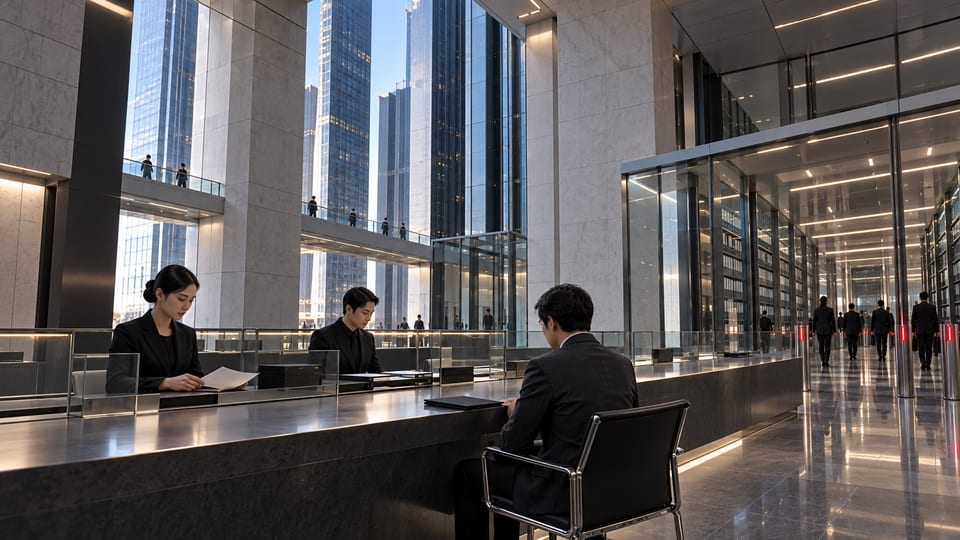

Restricted / Internal circulation
AS / 1102 / 01Asset Succession Instruction
The asset changes hands. The instructions remain in force.

NC-1102 / 01
Instruction received
Financial Relationships has accepted the succession packet for the Night City regional annex. The packet covers the facility interest, its installed equipment, and the records necessary to continue distribution. It does not transfer personal authority from one employee to another. Existing contractor appointments are listed separately from the asset schedule. The receiving office has acknowledged the distinction. This instruction records a change in institutional responsibility; it is not a statement that every relationship associated with the premises has been renewed.
NC-1102 / 02
Continuing obligations
The incoming administrator must preserve maintenance access where a current authorization can be established. A name on the payroll register is not sufficient evidence for a gate instruction, and an expired credential must not be renewed solely because equipment requires attention. Where the records disagree, Regional Counsel must identify the responsible authorizing office. Neither the bank relationship team nor the gate supervisor should resolve that disagreement by inventing a permission. Cargo appointments remain governed by the existing movement register until a replacement instruction is acknowledged.
NC-1102 / 03
Excluded correspondence
The contractor representative submitted an early-shift roster with the packet. A handwritten note identifies the person who holds the service cabinet key and asks that the morning team be told which entrance to use. The roster has been retained as supporting correspondence, not incorporated into the asset schedule. Financial Relationships has referred the entrance question to regional operations. The representative's acknowledgment of the handover must not be presented as acceptance of a revised employment or service arrangement. No such arrangement is contained in this instruction.
NC-1102 / 04
Completion condition
The financial transfer may be marked complete when the receiving administrator acknowledges the schedule and accepts the retained records. Operational exceptions must travel with that acknowledgment. In particular, a completed asset transfer is not evidence that access has been restored to every person previously admitted. The public operations summary may describe the facility transition, but should not promise the restoration of individual access. The first regional shift after handover is to be recorded separately. Financial Relationships will retain its correspondence even if the regional review is later closed. The old roster includes a handwritten correction beside the early shift. That correction remains part of the received packet.
Fictional internal records in an independent post-2077 narrative. NC-0417, NC-1102, their participants, policies, and correspondence are original inventions, not canonical game documents. Restricted labels are part of the story, not access controls.